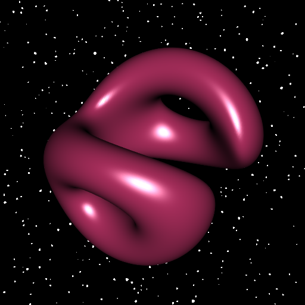

Slices of an implicit hypersurface with R
In a previous post, I showed how to draw a 3D slice of a 4D hypersurface when a parameterization of this hypersurface is available. Here we deal with the case when an implicit equation of the hypersurface is available. For the illustration, we again consider the tiger. It is given by the implicit equation \[ {\bigl(\sqrt{x^2 + y^2} - R_1\bigr)}^2 + {\bigl(\sqrt{z^2 + w^2} - R_2\bigr)}^2 = r^2. \] We will fix a value of the fourth coordinate \(w\), say \(w_0\). That is to say we deal with the cross-section with the hyperplane \(\{w = w_0\}\). And we will rotate the hypersurface in the 4D space. We use a right-isoclinic rotation. The function below performs such a rotation, allowing to pass several input vectors as a matrix.
# right-isoclinic rotation in 4D space
# xi is the angle of rotation
rotate4d <- function(alpha, beta, xi, vec){
a <- cos(xi)
b <- sin(alpha) * cos(beta) * sin(xi)
c <- sin(alpha) * sin(beta) * sin(xi)
d <- cos(alpha) * sin(xi)
x <- vec[, 1L]; y <- vec[, 2L]; z <- vec[, 3L]; w <- vec[, 4L]
cbind(
a*x - b*y - c*z - d*w,
a*y + b*x + c*w - d*z,
a*z - b*w + c*x + d*y,
a*w + b*z - c*y + d*x
)
}So, in the implicit equation we fix \(w=w_0\) and we perform the rotation, taking arbitrary values for \(\alpha\) and \(\beta\):
f <- function(xyz, w0, xi, R1 = 3, R2 = 2, r = 1){
rxyzw <- rotate4d(pi/4, pi/4, xi, cbind(xyz, w0))
x <- rxyzw[, 1L]
y <- rxyzw[, 2L]
z <- rxyzw[, 3L]
w <- rxyzw[, 4L]
(sqrt(x^2+y^2) - R1)^2 + (sqrt(z^2+w^2) - R2)^2 - r^2
}To plot the isosurface, we will use the rmarchingcubes package, not only for its speed, but also because it computes an excellent approximation of the per-vertex normals (it approximates the gradient of \(f\)). So taking a \(150 \times 150 \times 150\) grid is enough to get a smooth surface:
# make grid ####
n <- 150L
x <- seq(-5, 5, len = n)
y <- seq(-5, 5, len = n)
z <- seq(-5, 5, len = n)
Grid <- expand.grid(X = x, Y = y, Z = z)
# run the marching cubes ####
library(rmarchingcubes)
voxel <- array(f(Grid, w_0 = 0.3, xi = pi/3), dim = c(n, n, n))
cont <- contour3d(voxel, level = 0, x = x, y = y, z = z)
# plot ####
library(rgl)
mesh <- tmesh3d(
vertices = t(cont[["vertices"]]),
indices = t(cont[["triangles"]]),
normals = cont[["normals"]],
homogeneous = FALSE
)
open3d(windowRect = c(50, 50, 562, 562), zoom = 0.8)
bg3d(
sphere = FALSE, texture = "SpaceBackground.png", col = "white"
)
shade3d(mesh, color = "maroon")
Now let’s make an animation by varying the angle of rotation \(\xi\) from \(0\) to \(\pi\).
# vector of angles ####
nframes <- 60L
xi_ <- seq(0, pi, length.out = nframes)
# open the 3D engine ####
open3d(
windowRect = c(50, 50, 562, 562),
zoom = 0.85,
userMatrix = rbind(
c(0.93, -0.16, -0.33, 0),
c(0.35, 0.66, 0.67, 0),
c(0.11, -0.74, 0.67, 0),
c( 0, 0, 0, 1)
)
)
bg3d(
sphere = FALSE, texture = "SpaceBackground.png", col = "white"
)
# save the frames in png files ####
for(i in 1L:nframes){
v <- array(f(Grid, w0 = 0.3, xi = xi_[i]), dim = c(n, n, n))
cont <- contour3d(v, level = 0, x = x, y = y, z = z)
mesh <- tmesh3d(
vertices = t(cont[["vertices"]]),
indices = t(cont[["triangles"]]),
normals = cont[["normals"]],
homogeneous = FALSE
)
shade3d(mesh, color = "maroon")
snapshot3d(sprintf("zzpic%03d.png", i), webshot = FALSE)
clear3d()
}
# make the animation with ImageMagick ####
# option '-duplicate 1,-2-1' to get a forward-backward animation
command <- paste0(
"magick convert -dispose previous -delay 10 ",
"-duplicate 1,-2-1 zzpic*.png tiger.gif"
)
system(command).gif)
A similar animation with a more complex surface can be found on my youtube channel.